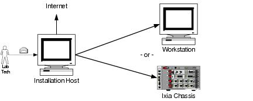
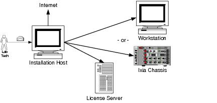
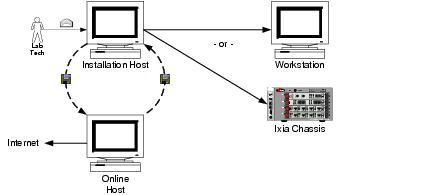
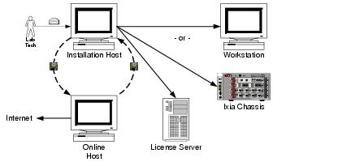

section in PDF
manual in PDF


|
|
|
| |
| Get this section in PDF |
Get entire manual in PDF |
|
Chapter 1: Introduction
Intended Audience
This guide is designed for the person who will perform the day-to-day operations of license installation, de-registration, updating, and management. Appendix A, License Management Planning Guide refers to this person as the Lab Technician, reporting to a Lab Manager.
A growing number of Ixia software products will use a new technique of licensing. When installing such a product, the steps in this guide should be followed.
Licensing is managed using the Ixia Registration Utility (IRU). The IRU is automatically installed with the installation of licensed Ixia products.
The different license management functions are covered in:
- Chapter 2, Registering Licenses – explains the process for installing a license on a chassis, workstation, or License Server in both an online and offline environment.
- Chapter 3, De-registering Licenses – explains the process for uninstalling a license from a chassis, workstation, or License Server in both an online and offline environment.
- Chapter 4, Updating Licenses – explains the process for updating a license on a chassis, workstation, or License Server in both an online and offline environment
- Chapter 6, Managing Licenses – discusses how to manage installed licenses.
- Appendix A, License Management Planning Guide – gives some background and helpful information on preparing a test environment for license management.
- Appendix B, Ixia Registration Utility (IRU) Errors and Troubleshooting – provides some basic troubleshooting inforation for license registration, as well as a list of error codes and their meaning.
- Appendix C, Licensing Diagnostic Utility – explains the use of the diagnostic utility to troubleshoot registration issues.
What is License Management?
Ixia's license management technique is the means by which Ixia:
Licenses are purchased from Ixia and issued to the customer via e-mail. These licenses must be installed on-site in order for the licensed software to operate correctly. License installation for an Ixia software product can occur either:
The licensing operation is accomplished with a simple wizard process and can be run from:
The computer used to perform the licensing process must be connected to the Ixia chassis and workstations in the lab environment. If at all possible, it should also be connected to the Internet. If a simultaneous connection to the lab network and Internet is not possible, it is still possible to complete all licensing operations; the process for off-line installation is covered in this guide.
Before installing a license, the Lab Technician must have:
Date-based versus Version-based Licensing
Before licensing version 2.40, licenses were linked to the version of the software being licensed. For example, if a license for IxProduct 3.00 was purchased, then the license was only good for the 3.00 version of IxProduct. If IxProduct was upgraded to version 3.1, a new license was required. This is version-based licensing, and required the customer to frequently update their licenses.
As of licensing version 2.40, all licenses issued are date-based licenses. Date-based licenses are valid for the entire period of the product's service contract. For example, if a license is purchased for IxProduct 3.00, with a service contract of one year, IxProduct can be upgraded to a new version (or a service pack) any time during that year without requiring a new license.
The new date-based licensing is backward compatible with the old version-based licensing.
Node-Locked vs. Floating Licenses
Depending on the Ixia product, there are two types of licenses that can be purchased:
- A node-locked license – this type of license is locked to a particular chassis or workstation, and allows only certain software functions to run on that chassis or workstation.
- A floating license – this type of license is stored on a License Server, and allows a set number of chassis or workstations to use various software features. All chassis or workstations that will use this license must be connected to the License Server, and the server must be running for the licensed Ixia product to function. Once the set number of users is reached for a particular license feature, additional users of the product are denied.
Both types of licenses are available from Ixia, and can be mixed to provide the best solution for the testing environment's needs.
Borrowed Licenses
Borrowed licenses are much like floating licenses in the sense that they are not node-locked and reside on a license server. The difference between a borrowed license and a floating license is that borrowed licenses are "checked out" from the server for a set amount of time. In most cases, floating licenses are only valid for the duration of the use case (in other words, they become available once the Ixia product is shut down).
Temporary Licenses
Temporary licenses are granted in the event that a purchased license is not yet available. This allows the customer to use purchased applications even if there is a delay in obtaining a valid license.
Temporary license have a time limit (measured in days) and become invalid after the time limit expires. They can be automatically issued when a valid license file is not found.
Evaluation Licenses
Evaluation licenses are used to evaluate Ixia software products. They can be used for a limited number of days. They are usually issued after a temporary license expires. They act in all respects as a regular license (they must be installed using the IRU), save for the fact that they have a time limit.
Proxy Servers and Firewalls
If licenses are installed on a network that uses either proxy servers or firewalls, it may be necessary to do an offline registration, even if the Installation Host can reach the Internet.
Follow the procedures for offline registration, de-registration, and update provided in the following sections:
For more information on proxy servers, see Appendix B, Ixia Registration Utility (IRU) Errors and Troubleshooting, and the online FAQ and troubleshooting guide on Ixia's website.
Installation Scenarios
There are four possible installation scenarios, described in the following sections:
The Installation Host is the computer that is used to perform the licensing installation. This can be the same computer on which the Ixia software was installed, an Ixia Chassis, a License Server, or a separate workstation.
Licensing to a Chassis or Workstation via the Internet
In this case, the Installation Host is connected to the Internet and licenses are installed to the workstation or Ixia chassis to which the license pertains (the workstation and the Installation Host can be the same machine). The Installation Host must also be connected to the workstation/chassis (if they are not the same machine).
Figure 1-1. Licensing to a Chassis or Workstation via the Internet

This process is described in Online License Registration – Step by Step on page 2-3.
Licensing to a License Server via the Internet
In this case, the Installation Host is connected to the Internet and the licenses are installed to a central License Server (the License Server and the Installation Host can be the same machine). The Installation Host must also be connected to the License Server and the workstation/chassis (if the License Server and Installation Host are not the same machine).
Figure 1-2. Licensing to a License Server via the Internet

This process is described in Online License Registration – Step by Step on page 2-3.
Licensing to a Chassis or Workstation without the Internet
In this case, the Installation Host is not connected to the Internet and the licenses are installed to the workstation or Ixia chassis to which the license pertains (the workstation and the Installation Host can be the same machine). The Installation Host must also be connected to the workstation/chassis (if they are not the same machine).
In order to complete the installation process, an additional computer is necessary – an Online Host, as shown in Figure 1-3. This machine must be connected to the Internet. It is necessary to transfer small amounts of information from the Online Host to the Installation Host to complete the process. E-mail or a portable USB drive may be appropriate.
Figure 1-3. Licensing to a Chassis or Workstation disconnected from the Internet

This process is described in Offline License Registration – Step by Step on page 2-10.
Licensing to a License Server without the Internet
In this case, the Installation Host is not connected to the Internet and the licenses are installed to a License Server (the License Server and the Installation Host can be the same machine). The Installation Host must also be connected to the License Server and the workstation/chassis (if the License Server and Installation Host are not the same machine).
In order to complete the installation process, an additional computer is necessary – an Online Host – shown in Figure 1-4. This machine must be connected to the Internet. It is necessary to transfer small amounts of information between the Online Host and the Installation Host to complete the process. E-mail or a portable USB drive may be appropriate.
Figure 1-4. Licensing to a License Server disconnected from the Internet

This process is described in Offline License Registration – Step by Step on page 2-10.
List of Terms
The following list defines some of the more often used terms in this manual that refer to licensing.
Chassis
An Ixia chassis, containing a card frame into which Card Modules are plugged in. A Chassis also contains an Intel processor (or equivalent), disk and network adapter.
De-registration
The process of removing a license from a particular chassis or workstation. Once a license has been de-registered, the products or services associated with the license cannot be used until a new license is acquired. De-registration is done using the Ixia Registration Utility (IRU). De-registrations can occur online or offline.
Floating License
A type of license that resides on a License Server and allows multiple workstations/chassis to use the product or software associated with the license. A floating license is node-locked to the License Server.
Installation Host
The workstation or chassis used to register, de-register, update, or move licenses. The Installation Host must be connected to the chassis or workstation that will use the licensed product or software (it can also be the same chassis or workstation that will use the licensed product of software). An Ixia Registration Utility (IRU) must be installed on this machine.
IRU
See Ixia Registration Utility.
Ixia Registration Utility
An application that controls Ixia licenses. The Ixia Registration Utility (IRU) is used to register, de-register, update, manage licenses. It is run from the Installation Host.
Lab Manager
The person who manages the test lab. This person will most likely be the point of contact for Ixia license information, and the one who receives the e-mail from Ixia with the registration numbers and passwords for Ixia licenses.
Lab Technician
A person who works with the equipment in the test lab. This person will most likely use the Ixia Registration Utility (IRU) to register, de-register, update, and manage licenses.
License
Official permission from Ixia to use specified products or software for a specific number of machines. A license is contained in a license file.
License File
A file that is placed on a chassis or workstation that contains license information for products or software. A license file uses the extension .lic, and is a text file. Any changes made to a license file invalidate the license.
License Server
A workstation or chassis that distributes licenses to a group of machines. License servers can monitor node-locked or floating licenses.
Node ID
An ID number assigned to a chassis or workstation by the Ixia Registration Utility (IRU) for identification purposes.
Node-Locked License
A license that is anchored to a specific chassis or workstation. The products or software controlled by the license can only be used on one chassis or workstation at a time.
Offline
If the Installation Host is not connected to the Internet (and therefore cannot reach the Ixia Registration Server) when registering, de-registering, or updating a license, the Installation Host is considered to be offline.
Online
If the Installation Host is connected to the Internet (and can reach the Ixia Registration Server) when registering, de-registering, or updating a license, the Installation Host is considered to be online.
Online Host
The chassis or workstation used to connect to the Ixia Registration Server (via the Internet) when registering, de-registering, or updating a license from an Installation Host in the offline state.
Registration
The process of installing and activating a license. Registration is done using the Ixia Registration Utility (IRU). Registrations can occur online or offline.
Registration Number
A number assigned to a license by the Ixia Registration Server, and sent via e-mail to a Lab Manager. It is coupled with a registration password.
Registration Password
A password assigned to a license by the Ixia Registration Server, and sent via e-mail to a Lab Manager. It is coupled with a registration number.
Registration Server
The central Ixia server that grants license registration numbers and passwords.
Temporary License
A license granted for a limited number of days in the event a valid license is not available.
Update
The process of renewing a license to match new version of software. Updates are done using the Ixia Registration Utility (IRU). License updates can occur online or offline.
Workstation
Any computer connected to a local-area network.
|
|
Did this document answer your question?
If not, let us know! |
|